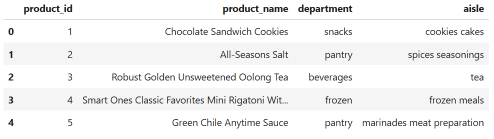

Market Basket Analysis: What Snacks Are Bought Together? (Python + Apriori)
Overview
Built a full Python market basket engine on 3M+ Instacart orders to uncover real snack-pairing behavior. Engineered a sparse matrix, ran Apriori at scale, and extracted high-lift product combinations retailers can use for cross-sell, promotions, and smarter shelf placement. Turned raw transaction data into clear, actionable retail insights.
What I Did
- Defined the business objective, metric targets, and analysis scope.
- Built and validated the data, modeling, and reporting workflow.
- Packaged outputs for stakeholder interpretation and decision support.
Results/Impact
Delivered an analysis workflow with decision-ready outputs and reusable artifacts.
Tech Stack
- Data Analysis, Machine Learning, Market Basket Modeling, Python, Retail Analytics
Deliverables
- Project brief: (add file)
- Slides/report: (add file)
- Dashboard/model file: (add file)
- SQL/notebook/code bundle: (add file)
Project Notes
Description: Built a full Python market basket engine on 3M+ Instacart orders to uncover real snack-pairing behavior. Engineered a sparse matrix, ran Apriori at scale, and extracted high-lift product combinations retailers can use for cross-sell, promotions, and smarter shelf placement. Turned raw transaction data into clear, actionable retail insights. Skills Demonstrated: Data Analysis, Machine Learning, Market Basket Modeling, Python, Retail Analytics Project Status: Planning
💬 Why I Built This
This project started with a simple curiosity:
��When people buy snacks�� what else ends up in the cart with them?��
It sounds small, but in retail and e-commerce, this question is worth so much money.
Every product pairing is a potential:
- Cross-sell
- Recommendation
- Bundle
- End-cap placement
- Inventory insight
I wanted to take a real Instacart dataset (3M+ rows), clean it properly, build a market basket model, and extract real product relationships.
This wasn��t just a coding exercise, and it became an end-to-end retail analytics project where I had to handle:
- Chunked loading of massive CSVs
- Sparse matrix engineering
- Association rule mining
- Data storytelling
- And turning raw math into business meaning
And guess what!
It ended up being one of the cleanest, most practical data analytics projects I��ve done.
The raw Instacart tables include products, aisles, departments, and 30M+ order rows. I narrowed the scope to the snacks department so the analysis stayed focused and useful.
Product Lookup Table
I merged product, aisle, and department files to create a human-readable lookup.

This step gives every product_id a clean name and category, which super important later when rules need to be interpretable.
The order_products_prior.csv file is huge, so I couldn��t load it in one shot.
Instead, I streamed it in 250,000-row chunks, keeping only rows where the item belonged to the snacks department.
This reduced millions of rows down to something manageable, while keeping all snack purchases in the dataset.
To run association rules, every order needs to become a list of items.
order_id | [item1, item2, item3, ...]After grouping products by order, I narrowed analysis to the top 50 most purchased snacks. Why?
- Reduces noise
- Keeps the model focused
- Speeds up computation
- Produces clearer, more actionable rules
Then I built a sparse matrix (orders × items), with boolean values indicating whether each snack was bought in each order.
This is the backbone of Apriori.

I used mlxtend to run Apriori with:
- min_support = 0.003
- max_len = 3
Then I generated rules using lift as the main metric.
Why lift?
Because:
Lift > 1 = ��happens more often together than by chance.��
Perfect for discovering natural product pairings.

A. Top 10 Rules by Lift
This chart immediately showed clusters:
- Gluten-free oat granola + gluten-free granola bars
- Annie��s Bunny Fruit Snacks pairings
- Trail mix + unsalted nuts

These are exactly the kinds of patterns retail teams use for shelf placement or digital recommendations.
B. Most Frequently Purchased Snacks
Before pairings, I checked the leaders by volume.

You can see clear dominance from snack staples (like veggie straws, crisps, etc.).
C. Support vs Confidence (Colored by Lift)
Scatterplot showing rule quality across three dimensions:
- Support (popularity)
- Confidence (reliability)
- Lift (strength)

This is the fastest way to spot high-impact rules.
D. Snack Network Graph
A fun one: nodes = snacks, edges = rules.
It visualizes ��clusters�� of products that shoppers naturally buy in combinations.

This dataset seems simple, but the patterns reveal real shopper behavior.
1. Health-focused snacks form tight clusters.
Gluten-free bars, oat granola, fruit snacks, and trail mix all appear together.
These products complement each other naturally.
2. A small set of high-volume snacks drive the department.
The distribution is long-tailed.
15 products dominate the vast majority of snack orders.
3. Strong lift values reveal genuine cross-sell opportunities.
Pairs like granola bars + oat granola aren’t random, and they��re real buying habits.
4. Apriori is incredibly practical when used well.
Yes, it��s academic on paper.
But with clean engineering and smart filtering, it uncovers insights marketing teams can use!
Here��s where this project stops being ��school project�� and becomes an actual business tool:
�� End-cap Optimization
Stock high-lift pairs together.
�� Bundles & Promo Design
Create snack bundles around popular duos.
�� Recommendation Engine Input
��Frequently Bought Together�� items for e-commerce.
�� Inventory Planning
If product A surges, expect product B to follow.
�� A/B Testing Fuel
Test promotions on high-lift combinations.
- Notebook: 01_data_cleaning_and_eda.ipynb
- Sparse matrix + Apriori code
- All visualizations generated programmatically
- Clean Python pipeline for reproducibility
This project forced me to think like a data scientist.
It wasn��t about running Apriori, it was about handling millions of rows, building efficient structures, and turning numbers into insights that matter.
It felt like the perfect bridge between:
- Technical skill (Python, sparse matrices, association rules)
- Analytical thinking
- Business decision-making